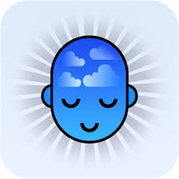

Good sleep, good learning, good life
It is everyone's dream to wake up fresh, happy, and ready for action on a daily basis. Sadly,
in the modern world, only a small minority lives that dream.Yet the dream
is within reach for most healthy people given:
- a bit of knowledge, and
- a readiness to make some lifestyle sacrifice.
Healthy sleep may be incompatible with some modern habits, some cravings, or some lifestyle choices.
At worst, refreshing sleep may be incompatible with one's job or even long-term goals.
Importance of sleep
Why understanding sleep is important?
Too few people realize how important sleep is! The alarm clock is an often-used fixture in an overwhelming majority of households of the modern world.
By using electric lighting, alarm clocks, sleeping pills, and shift-work, we have wreaked havoc on the process of sleep.
Go to top
Over the last hundred years of the twentieth century, we have intruded upon a delicate and finely regulated process that was perfected by several hundred million years of evolution.
Yet only recently have we truly become aware that this intrusion may belong to the most important preventable factors that are slowing societal growth in industrial nations!
In a couple of years from now, we may look at alarm clocks and "sleep regulation" in the same way that we look today at other "great" human inventions in the league of cigarettes, asbestos materials, or radioactive cosmetics.
Check this list below and see which applies to you:

- I often have problems with falling asleep at the right time
- I often find it painful to get up in the morning due to sleepiness
- I am often awfully drowsy at school or at work
- I regularly cut my sleep by 2-3 hours as compared with what my body seems to need
- I use the alarm clock and truly hate it
- I drink buckets of coffee or coke
- I often take 2-4 hour naps in the evening
- for me, at least one of the above is a source of regular stress or reduced productivity
- it is ok to use an alarm clock to cut sleep short
- it is ok to work in shifts
- it is ok to travel people around the world without much attention to the jet lag problem
- it is ok to save time by sleeping less and working more
- it is ok to pull kids out of bed in time for school
- it is ok to skip nights before important exams, etc.
Cutting down on sleep does not make people die (at least not immediately). It does make them feel miserable, but the ease with which we recover by getting just one good night of sleep seems to make sleep look cheap.
Even the reports from the Guinness World Record attempt at sleeplessness (Randy Gardner's awakathon in 1964 lasted 11 days) trivialized the effects of sleeplessness. Many books on psychiatry and psychology
still state that there aren't any significant side effects to prolonged sleeplessness!
This is false! The Guinness Book of Records has since withdrawn its sleep deprivation category due to the involved health risks.
Why do we sleep?
For many years, the physiological function of sleep has not been clear. In most people's mind, sleep is associated with rest and time for mental regeneration.
Restorative, protective and energy-conserving theories of sleep have been quite popular until quite recently, when it has become apparent that one long-lasting sleep episode with suppression of consciousness
does not seem to be the right way for evolution to tackle depleted resources, toxic wastes, or energy conservation.
For example, muscles do not need to shut off completely to get rest.
The critical function of sleep is dramatically illustrated in experiments in which rats chronically deprived of sleep eventually die usually within 2.5 weeks.
In evolutionary terms, sleep is a very old phenomenon and it clearly must play a role that is critical to survival. Only quite recently, it has been proven beyond doubt that the function of sleep is related to learning (not all scientists agree)!
Researchers have long known about the importance of the hippocampus, a small brain organ, for memory formation. Yet it has always been difficult to find out what is special about the hippocampus that distinguishes it from other areas of the cerebral cortex that also show synaptic plasticity,
i.e. the ability to store memories.
Go to top
for more see :